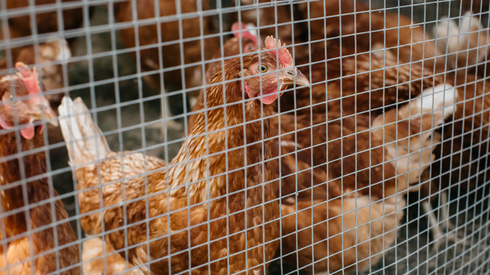

Recognized for Real Change
We are proud to announce that Kestrel Metal has received a national industry award for sustainable manufacturing, honoring our pioneering work in low-emission galvanizing. Selected from more than 120 entrants across the metals sector, the award recognizes manufacturers that demonstrate measurable environmental progress without compromising product quality or competitiveness. For our team — and especially the engineers and production staff who spent years rebuilding our processes from the ground up — this recognition confirms that sustainable manufacturing and industrial scale can go hand in hand.
What the Award Recognizes
The judging panel cited three achievements: the retrofit of our galvanizing lines with low-emission kettle technology and advanced flux management, a zinc capture and recycling system that pushes zinc utilization above 98%, and the transparency of our environmental reporting. Hot-dip galvanizing is traditionally one of the most emissions-intensive steps in wire mesh production. Reimagining it — rather than simply offsetting it — was the core engineering challenge our R&D and operations teams set out to solve.

Inside the Low-Emission Process
Our reengineered galvanizing operation works on three fronts. First, high-efficiency kettles with improved insulation and heat recovery cut the energy required per ton of galvanized output by a double-digit margin. Second, closed-loop flux regeneration recovers and reprocesses pretreatment chemicals instead of discharging them. Third, a zinc recovery system harvests excess metal from the dipping process and returns it to production, reducing both raw material demand and zinc-bearing waste. Emissions monitoring across all stacks is continuous, with results verified by independent auditors and published in our annual ESG report.
Sustainability Across Our Operations
The award-winning galvanizing program is one pillar of a broader strategy. Rooftop solar arrays now supply roughly 30% of the energy demand at our newest facility, closed-loop water recycling has eliminated process wastewater discharge, and our automated Line 3 reduces energy consumption and material waste per ton of output. On the product side, longer-life coatings such as our new Zn–Al alloy extend service intervals — because the most sustainable product is the one you do not have to replace.

What Comes Next
This award is a milestone, not a finish line. Our roadmap targets carbon-neutral manufacturing operations by 2028, with the next phase focused on electrifying remaining thermal processes and expanding renewable supply across all sites. We will continue to publish verified progress each year, and we invite customers and partners to hold us to it. If sustainable supply chains matter to your projects, our team is ready to share documentation, product carbon data, and certified green specifications for your next order.
Looking for a wire mesh supplier with verified sustainability credentials? Kestrel Metal combines certified quality with low-emission manufacturing and full environmental documentation. Request a Quote